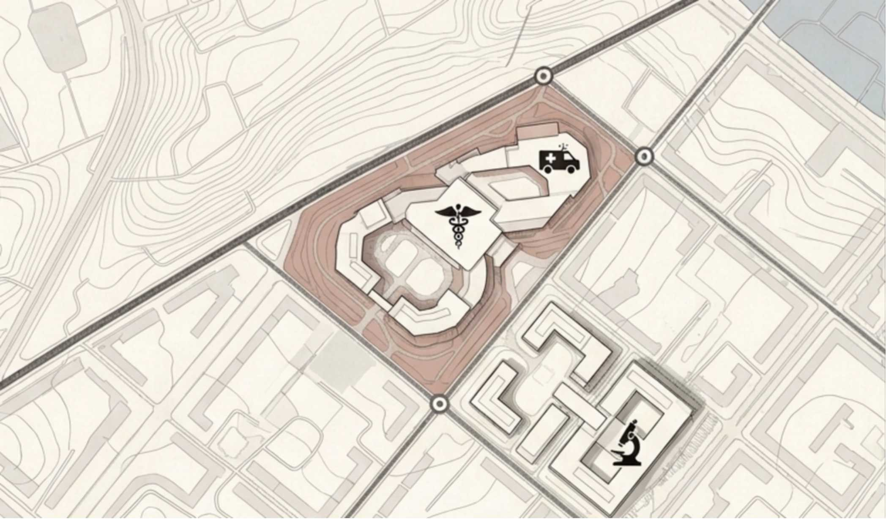
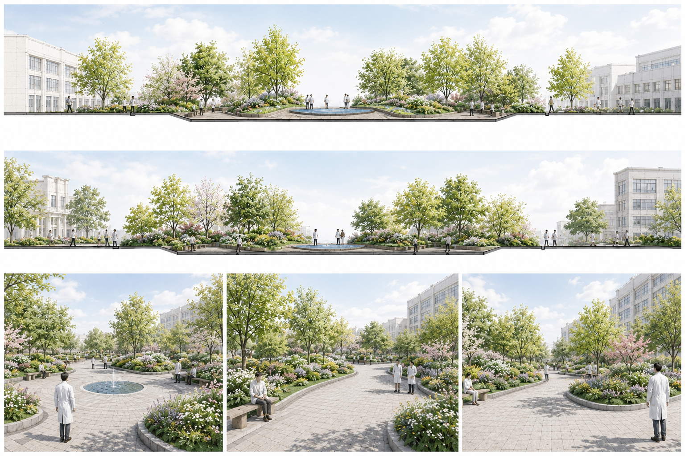
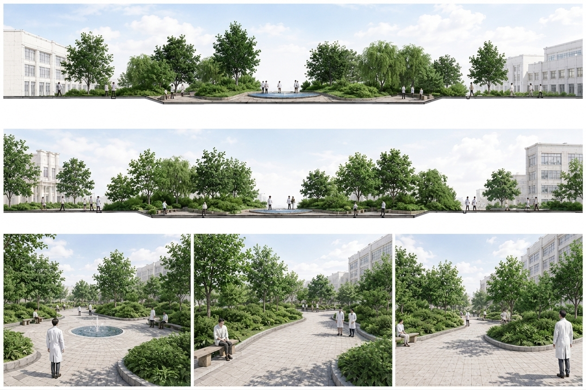
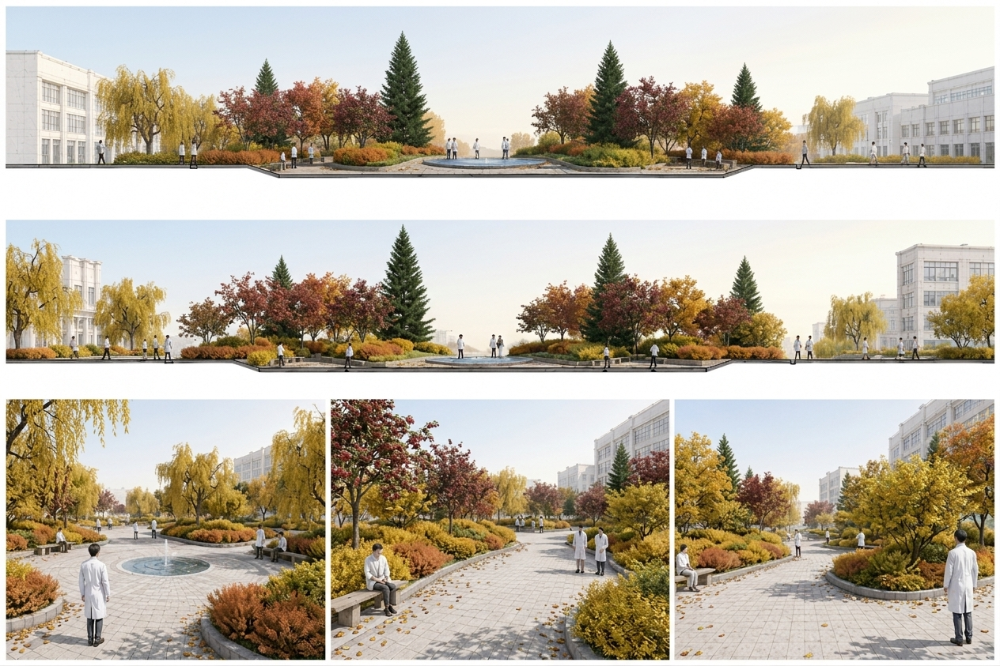
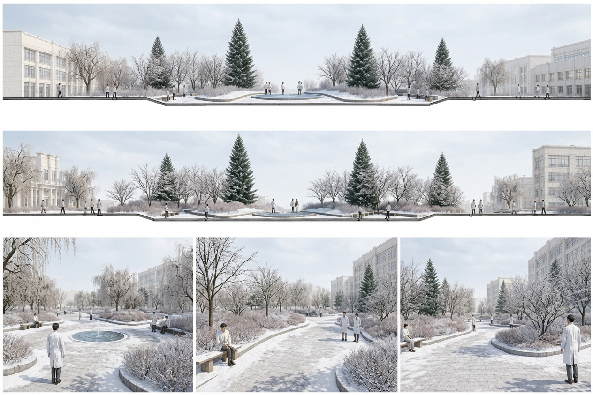

DRAWING PRESENTATION
/
N45°12' E126°38'
6/6 DRAWINGS LOADED
01 // SITE PLAN & SAMPLING NETWORK
MAP.PNG — SCALE 1:500

02 // SEASONAL COLOR MATRIX (SPRING → WINTER)
4-PHASE PHENOLOGY

PHASE 01
SPRING

PHASE 02
SUMMER

PHASE 03
AUTUMN

PHASE 04
WINTER
03 // AXONOMETRIC MASTER PROPOSAL
DESIGN4.JPG — FINAL COMPREHENSIVE BOARD